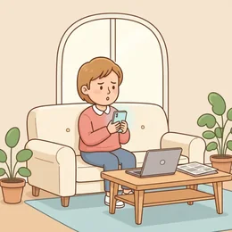
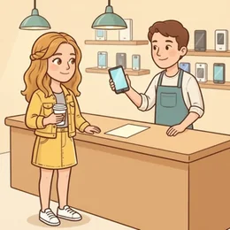
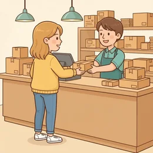
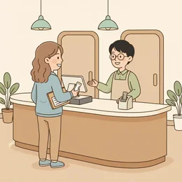

deutschoderwas · Sprechclub · Woche 4 · Strang B · Teil 2 ·
Dieselbe Silbe, ganz neue Bedeutung
nehmen heißt nehmen. Aber annehmen, abnehmen, aufnehmen und einnehmen haben damit fast nichts mehr zu tun. Heute lernst du, wann die Vorsilbe die Bedeutung verschiebt — und wann sie sie austauscht.
Dein Niveau
Gleiches Thema, andere Sätze. Wechsle jederzeit — probier ruhig beide Seiten aus.
Vier Vorsilben, vier fremde Verben
annehmen (akzeptieren), abnehmen (leichter werden), aufnehmen (aufzeichnen), einnehmen (schlucken). Vier Wörter aus derselben Wurzel — und keines heißt mehr nehmen. Genau hier trennt sich B1 von B2.

Welche dieser vier Bedeutungen kanntest du schon?
Welche hättest du falsch geraten?
Gibt es in deiner Sprache auch solche Wortfamilien?
Woran erkennst du beim Zuhören, welche Bedeutung gemeint ist?
Warum reicht die Vorsilbe allein oft nicht — was verrät noch mehr?
Welches Verb hat dich schon einmal in eine peinliche Lage gebracht?
🔑 Die Regel für heute: Nicht die Vorsilbe allein entscheidet, sondern was danach kommt. Ich nehme das Angebot an (akzeptieren) gegen Ich habe fünf Kilo abgenommen (Gewicht). Das Objekt verrät die Bedeutung.
Und dann gibt es die festen Wendungen
Es kommt darauf an.Das hängt davon ab.Mir ist aufgefallen, dass … Diese Sätze stehen in jedem zweiten deutschen Gespräch — und man kann sie nicht Wort für Wort übersetzen. Man lernt sie als Ganzes.
Was heißt Es kommt darauf an in deiner Sprache?
Welche feste Wendung benutzt du schon oft?
Warum sind gerade diese Wendungen so schwer zu übersetzen?
Wie merkst du dir, ob es darauf, davon oder damit heißt?
💡 Der Trick mit da(r)-: Das kleine da kündigt an, dass gleich ein ganzer Satz kommt. Es kommt darauf an, ob du Zeit hast. Wer das darauf hört, weiß: Der wichtige Teil kommt erst.
Kurz zurück: Dienstag in zwei Minuten
Falls du Teil 1 verpasst hast — das hier reicht, um heute mitzumachen.
So ging der SatzIch muss dich anrufen. Ich rufe dich gleich an. Ich habe dich schon angerufen. Ich vergesse nur, dich anzurufen.
Betonung entscheidet
So ging die RegelÁNrufen ist trennbar, verSTÉHen nicht. Deshalb heißt es angerufen, aber verstanden.
Sag denselben Satz zweimal: als Hauptsatz und mit dass.
Wo steht das ge bei abholen im Perfekt?
Warum heißt es anzurufen und nicht zu anrufen?
🔁 Zu zweit, dreißig Sekunden: Einer nennt ein trennbares Verb, der andere baut sofort Hauptsatz und Perfekt. Danach geht es weiter — heute ändert die Vorsilbe nämlich nicht mehr nur die Stellung, sondern den ganzen Sinn.
Zwölf Verben, die sich verstellen
Sagt jedes Verb laut — und gleich den Beispielsatz. Achtet darauf, wie weit die Bedeutung vom Grundverb weg ist.

annehmen
„Ich habe das Angebot angenommen.“
💡 Zweite Bedeutung: vermuten. Ich nehme an, dass er kommt. Genau daran erkennt man, ob jemand wirklich B2 spricht.
📉
abnehmen
„Er hat seit dem Sommer sechs Kilo abgenommen.“
💡 Aber auch: Nimmst du mir die Tasche ab? (abnehmen = abnehmen helfen) und Das nehme ich dir nicht ab (= das glaube ich dir nicht).
aufnehmen
„Ich nehme das Gespräch auf, wenn es dir recht ist.“
💡 Drei Bedeutungen: aufzeichnen (Ton, Video), bei sich wohnen lassen und in eine Gruppe aufnehmen. Der Zusammenhang entscheidet.
einnehmen
„Die Tabletten sind dreimal täglich einzunehmen.“
💡 Das offizielle Wort auf jedem Beipackzettel. Im Alltag sagt man einfach nehmen: Ich nehme das morgens.
💡
anmachen
„Machst du bitte das Licht an?“
💡 Achtung, dritte Bedeutung: jemanden anmachen heißt anbaggern oder anpöbeln. Bei Personen also besser ansprechen sagen.
ausmachen
„Wir haben für Freitag einen Termin ausgemacht.“
💡 Drei Bedeutungen: vereinbaren (einen Termin), abschalten (das Licht) und in Das macht mir nichts aus = das stört mich nicht.

aufgeben
„Gib nicht auf, du bist fast durch.“
💡 Zwei weit auseinanderliegende Bedeutungen: resignieren und etwas zur Beförderung abgeben (ein Paket aufgeben, eine Anzeige aufgeben).
angeben
„Bitte geben Sie im Formular Ihre Telefonnummer an.“
💡 Im Formular heißt es nennen, im Gespräch heißt es prahlen: Er gibt gern an. Der Ton verrät sofort, welche gemeint ist.
ausgeben
„Wir haben am Wochenende viel zu viel ausgegeben.“
💡 Ich gebe einen aus heißt: Ich zahle die Runde. Und sich als etwas ausgeben heißt: so tun, als wäre man jemand anderes.
einfallen
„Mir fällt gerade kein besseres Wort ein.“
💡 Steht immer mit Dativ: Mir fällt ein, nicht ich falle ein. Und der Satz Mir fällt nichts ein rettet jede Sprechpause.
auffallen
„Mir ist aufgefallen, dass du heute sehr still bist.“
💡 Auch mit Dativ. Mir ist aufgefallen, dass … ist die höflichste Art, etwas anzusprechen — es klingt nach Beobachtung, nicht nach Vorwurf.

ankommen auf
„Es kommt darauf an, wie viel Zeit wir haben.“
💡 Mit Akkusativ: Es kommt auf den Preis an. Und mit Nebensatz immer über darauf: Es kommt darauf an, ob …
💡 Spiel „Welche Bedeutung?“: Einer sagt nur das Verb („aufnehmen“). Der andere muss in fünf Sekunden zwei verschiedene Sätze bilden, in denen es Verschiedenes heißt. Wer nur eine Bedeutung findet, gibt ab.
Wie weit ist es vom Grundverb weg?
Manche Vorsilben schieben die Bedeutung nur ein Stück, andere tauschen sie komplett aus. Drei Grade — und danach drei Satzpaare, bei denen fast alle danebenliegen.
🟢
Die Richtung bleibt
das Grundverb ist noch klar zu erkennen
einsteigen, aussteigen, mitkommen
🟡
Die Bedeutung verschiebt sich
man erkennt die Verbindung noch, wenn jemand sie erklärt
Warum das stimmtauffallen steht mit Dativ: mir, ihm, uns. Die Person ist nicht der Handelnde, sondern der, dem etwas auffällt.
❌ So nicht
Ich habe aufgefallen, dass du heute wenig sagst.
Das ProblemDann wärst du aufgefallen. Und das Hilfsverb ist sein, nicht haben: Mir ist aufgefallen.
✅ So sagt man es
Es kommt darauf an, ob wir genug Zeit haben.
Warum das stimmtankommen auf braucht vor einem Nebensatz das Wörtchen darauf. Ohne dieses darauf hängt der Satz in der Luft.
❌ So nicht
Es kommt an, ob wir genug Zeit haben.
Das Problemankommen allein heißt eintreffen — der Zug kommt an. Für entscheidend sein braucht es die Präposition.
✅ So sagt man es
Ich nehme an, dass sie schon Bescheid weiß.
Warum das stimmtannehmen heißt hier vermuten und steht mit einem dass-Satz. Genauso häufig: Ich nehme an, du kommst?
❌ So nicht
Ich nehme, dass sie schon Bescheid weiß.
Das ProblemOhne an fehlt genau die Bedeutung. nehmen allein braucht immer ein Objekt: Ich nehme den Bus.
Vier Handgriffe — und du lernst nicht mehr Wörter, sondern weniger:
Lerne nie das Verb allein, sondern immer mit Objekt: ein Angebot annehmen, Gewicht abnehmen, ein Gespräch aufnehmen.
Achte auf den Fall:mir fällt ein und mir fällt auf stehen mit Dativ. Wer den Fall kennt, kennt oft schon die Bedeutung.
Sammle die Wendungen als ganze Sätze:Es kommt darauf an.Das hängt davon ab.Das macht mir nichts aus.
Frag im Zweifel nach:Meinst du annehmen wie akzeptieren oder wie vermuten? Das ist keine Schwäche, sondern genau das, was Muttersprachler auch tun.
Und der wichtigste Punkt: Diese Verben lernst du nicht durch Listen, sondern durch Wiedererkennen. Jedes Mal, wenn dir eines im Gespräch auffällt, sitzt es ein Stück fester.
🎯 Zu zweit, eine Minute: Einer sagt eine Bedeutung („akzeptieren“, „Gewicht verlieren“, „aufzeichnen“). Der andere nennt sofort das Verb und einen ganzen Satz dazu — mit Objekt.
Vier Bausteine für die feinen Verben
Vermuten, einordnen, beobachten, abwägen. Genau dafür braucht man diese Verben — und genau das hört man an B2.
1 · 🤔 Vermuten Ich nehme an, dass …Ich gehe davon aus, dass …Vermutlich …
So klingt esIch nehme an, dass sie schon Bescheid weiß.
2 · 👀 Beobachten Mir ist aufgefallen, dass …Mir fällt gerade ein, dass …Ist dir aufgefallen, …?
So klingt esMir ist aufgefallen, dass du seit Montag nichts gesagt hast.
3 · ⚖️ Abwägen Es kommt darauf an, ob …Das hängt davon ab, wie …Das macht mir nichts aus
So klingt esEs kommt darauf an, ob wir genug Zeit haben.
4 · ✅ Zusagen und absagen Ich nehme das Angebot anIch gebe es lieber aufMachen wir einen Termin aus?
So klingt esIch nehme das Angebot an — machen wir gleich einen Termin aus?
1 · 🧠 Vorsichtig vermuten Ich würde annehmen, dass …Es spricht einiges dafür, dass …Ich könnte mir vorstellen, dass …
So klingt esIch würde annehmen, dass sie längst informiert ist — sicher bin ich mir aber nicht.
2 · 🔍 Beobachtung als Einstieg Mir ist in letzter Zeit aufgefallen, …Was mir dabei auffällt, ist …Es fällt auf, dass …
So klingt esWas mir dabei auffällt, ist, dass alle das Gleiche sagen — nur mit anderen Worten.
3 · ⚖️ Differenziert abwägen Das hängt entscheidend davon ab, ob …Es kommt weniger auf … an als auf …Im Grunde macht das keinen Unterschied
So klingt esEs kommt weniger auf das Geld an als darauf, ob die Aufgabe zu mir passt.
4 · 🤝 Verbindlich reagieren Das nehme ich gern anDa gebe ich lieber rechtzeitig aufIch gebe Ihnen dazu Bescheid
So klingt esDas Angebot nehme ich gern an; die zweite Aufgabe gebe ich dagegen lieber rechtzeitig ab.
Verb das Verb der Fall dazu Höflichkeit
📣 Sofort anwenden: Diskutiert zu zweit eine kleine Entscheidung — welches Handy, welcher Kurs, welche Wohnung. Jede Antwort muss mit Es kommt darauf an oder Das hängt davon ab beginnen. Nach fünf Runden sitzt es.
Vier Gespräche — zwei Runden
Runde 1: Lest den Dialog zu zweit laut. Runde 2: Deckt die Zeilen von B ab und sprecht frei — die Hinweise reichen.
Dialog 1 · „Das Angebot“
B hat ein Angebot bekommen und ist noch unentschlossen. A fragt nach.
A
Und? Nimmst du es an?
B
Es kommt darauf an, wie schnell sie eine Antwort brauchen.
🗣️ Es kommt darauf an plus indirekte Frage — die häufigste Art, sich Zeit zu verschaffen.tippen = Hilfe zeigen
A
Bis Freitag, hast du gesagt.
B
Stimmt. Ich nehme an, dass ich bis dahin klarer sehe.
🗣️ Hier heißt annehmen plötzlich vermuten. Zwei Zeilen, zwei Bedeutungen.tippen = Hilfe zeigen
A
Was fehlt dir denn noch?
B
Mir ist aufgefallen, dass im Vertrag nichts über Homeoffice steht.
🗣️ Mir ist aufgefallen mit Dativ und sein — nie ich habe aufgefallen.tippen = Hilfe zeigen
A
Dann frag doch einfach nach.
B
Mache ich. Das hängt nämlich stark davon ab, ob ich zweimal die Woche zu Hause bleiben kann.
🗣️ abhängen von — mit Nebensatz immer über davon.tippen = Hilfe zeigen
Dialog 2 · „In der Apotheke“
Du holst ein Medikament ab und liest die Packungsbeilage nicht allein.
A
Das ist dreimal täglich einzunehmen, jeweils nach dem Essen.
B
Also nicht auf leeren Magen. Und wenn ich eine Einnahme vergesse?
🗣️ einnehmen ist das Fachwort, nehmen das Alltagswort. Beide gehen.tippen = Hilfe zeigen
A
Dann einfach die nächste normal nehmen, nicht doppelt.
B
Gut. Mir ist aufgefallen, dass hier steht: nicht mit Milch.
🗣️ Wieder Mir ist aufgefallen — die höflichste Art nachzufragen.tippen = Hilfe zeigen
A
Genau, das schwächt die Wirkung ab.
B
Verstanden. Und wie lange nehme ich das ein — kommt das auf die Beschwerden an?
🗣️ ankommen auf mit Akkusativ: auf die Beschwerden.tippen = Hilfe zeigen
A
Sieben Tage, auch wenn es früher besser wird.
B
Alles klar. Dann gebe ich vorher nicht auf.
🗣️ aufgeben hier als abbrechen — mit einem Augenzwinkern gesagt.tippen = Hilfe zeigen
Dialog 3 · „Der teure Monat“
Ihr schaut euch zu zweit an, wohin das Geld verschwunden ist.
A
Wir haben diesen Monat echt viel ausgegeben.
B
Mir ist auch aufgefallen, dass wir fast jeden Abend bestellt haben.
🗣️ Beobachtung statt Vorwurf — deshalb funktioniert dieser Satz auch bei heiklen Themen.tippen = Hilfe zeigen
A
Sollen wir das ändern?
B
Es kommt darauf an, wie viel wir bis Weihnachten sparen wollen.
🗣️ Es kommt darauf an plus wie viel — indirekte Frage als Nebensatz.tippen = Hilfe zeigen
A
Zweihundert im Monat wären schön.
B
Dann hängt es vor allem davon ab, ob wir zweimal die Woche selbst kochen.
🗣️ davon abhängen, ob — und vor allem gewichtet die Aussage.tippen = Hilfe zeigen
A
Kochen macht mir nichts aus. Einkaufen schon.
B
Dann übernehme ich das Einkaufen. Und du gibst einmal im Monat einen aus.
🗣️ Das macht mir nichts aus und einen ausgeben — zwei feste Wendungen in vier Zeilen.tippen = Hilfe zeigen
Dialog 4 · „Wir nehmen das auf“
Ihr bereitet gemeinsam eine kurze Aufnahme vor — für die Uni oder die Arbeit.
A
Sollen wir das Gespräch aufnehmen?
B
Wenn du magst. Ich nehme an, du willst es hinterher abtippen?
🗣️ Zwei Bedeutungen von nehmen-Verben direkt hintereinander: aufzeichnen und vermuten.tippen = Hilfe zeigen
A
Genau. Ist dir das unangenehm?
B
Nein, das macht mir nichts aus. Mach nur das Fenster zu, sonst hört man die Straße.
🗣️ Das macht mir nichts aus — die eleganteste Art, Einverständnis zu zeigen.tippen = Hilfe zeigen
A
Gute Idee. Fangen wir an?
B
Moment, mir fällt gerade ein, dass wir die Namen weglassen sollten.
🗣️ Mir fällt ein — Dativ, und der Gedanke kommt von selbst.tippen = Hilfe zeigen
A
Stimmt, sonst müssen wir sie später alle rauslöschen.
B
Eben. Also: Wir geben nur an, worum es geht, und lassen den Rest weg.
🗣️ angeben hier als nennen — nicht als prahlen.tippen = Hilfe zeigen
🎭 Und jetzt ihr: Spielt Dialog 1 noch einmal — aber A drängt auf eine sofortige Entscheidung. B muss dreimal ausweichen, jedes Mal mit einer anderen Wendung: Es kommt darauf an, Das hängt davon ab, Ich nehme an.
🧩 darauf, davon, damit: das Wort, das den Nebensatz ankündigt
Viele dieser Verben haben eine feste Präposition. Kommt danach ein ganzer Satz, braucht man erst ein kleines da(r)-Wort — sonst fehlt dem Satz der Anschluss.
ankommen auf, abhängen von, anfangen mit, sich freuen auf — die Präposition gehört fest zum Verb und lässt sich nicht frei wählen. Steht danach ein Nomen, bleibt alles normal: Es kommt auf den Preis an. Steht danach ein ganzer Satz, schiebt sich ein Ersatzwort davor: da + Präposition, mit r dazwischen, wenn die Präposition mit Vokal beginnt: darauf, darüber, daran — aber davon, damit, dafür. Und dann folgt der Nebensatz: Es kommt darauf an, ob wir Zeit haben.
⚖️ankommen auf → daraufEs kommt darauf an, ob du Zeit hast.
▾
🔗abhängen von → davonDas hängt davon ab, wie teuer es wird.
▾
🎬anfangen mit → damitWir fangen damit an, alles aufzuschreiben.
▾
😊sich freuen auf → daraufIch freue mich darauf, dich zu sehen.
EsEs
Verb an zweiter Stellekommt
Ankündigungdarauf
Vorsilbe, dann Nebensatzan, ob wir Zeit haben.
Wann da-, wann dar-?
Eine einzige Frage entscheidet: Fängt die Präposition mit einem Vokal an? Dann schiebt sich ein r dazwischen, damit man es aussprechen kann.
🔤
Vokal am Anfang
ein r kommt dazwischen
auf → darauf
🔡
Konsonant am Anfang
kein r nötig
von → davon
🙋
Bei Menschen
kein da-Wort, sondern Präposition + Person
Ich freue mich auf dich.
auf → darauf · an → daran · über → darüberin → darin · aus → daraus · um → darumvon → davon · mit → damit · für → dafürzu → dazu · nach → danach · bei → dabeiFrage dazu: Worauf? Wovon? Womit?Bei Personen nicht: auf wen? von wem? mit wem?
Verben, die den Dativ mitbringen
Bei einfallen, auffallen, gefallen und gehören ist die Person nicht der Handelnde, sondern der Empfänger. Deshalb steht sie im Dativ — und deshalb klingen diese Sätze auf Deutsch anders herum als in fast jeder anderen Sprache.
💭
einfallen
der Gedanke kommt zu dir
Mir fällt sein Name nicht ein.
👀
auffallen
etwas springt dir ins Auge — Perfekt mit sein
Mir ist aufgefallen, dass …
🤷
ausmachen
etwas stört dich nicht
Das macht mir nichts aus.
✅ Mir fällt gerade nichts ein.❌ Ich falle gerade nichts ein.✅ Mir ist aufgefallen, dass …❌ Ich habe aufgefallen, dass …✅ Das gefällt mir gut.✅ Das macht mir nichts aus.
🧱 Bau die Sätze selbst
Tippe die Teile in der richtigen Reihenfolge an. Danach auf „Prüfen“ — und den fertigen Satz laut lesen.
📖 Und jetzt im Zusammenhang
Eine Entscheidung, die niemand allein treffen will. Wähle in jeder Lücke das passende Wort.
Drei Handgriffe, immer in dieser Reihenfolge:
Lern das Verb mit seiner Präposition, nie ohne: ankommen auf, abhängen von, anfangen mit. Das ist die eigentliche Arbeit.
Kommt ein Nomen? Dann normal: Es kommt auf den Preis an.
Kommt ein Satz? Dann da + Präposition davor — mit r, wenn ein Vokal folgt: darauf, daran, darüber.
Geht es um eine Person? Dann kein da-Wort: Ich freue mich auf dich, nicht darauf.
Drei Sätze zum Auswendiglernen, die zusammen fast alles abdecken: „Es kommt darauf an, ob …“ · „Das hängt davon ab, wie …“ · „Ich freue mich darauf, dass …“
🎭 Drei Gespräche zu zweit
Zu zweit. In jedem Gespräch muss mindestens dreimal eine feste Wendung mit da(r)- vorkommen. Danach tauschen.
1 · Soll ich das Angebot annehmen?
A hat ein Angebot bekommen und schwankt. B fragt nach und hilft beim Abwägen — ohne zu entscheiden.
Es kommt darauf an, ob …Ich nehme an, dass …Mir ist aufgefallen, dass …Das macht mir nichts aus
Woran hängt es für dich am meisten?Es kommt weniger auf … an als auf …Ich würde annehmen, dass …Was spricht dagegen, es anzunehmen?
✅ Eine gute Runde enthältA benutzt mindestens dreimal ein da(r)-Wort mit Nebensatz. Am Ende steht eine Entscheidung mit Begründung — kein bloßes Vielleicht.
2 · Das teure Wochenende
A und B haben zusammen viel Geld ausgegeben und schauen zurück. Es soll keine Schuldfrage werden, sondern ein Plan.
Wir haben viel ausgegebenMir ist aufgefallen, dass …Das hängt davon ab, ob …Ich gebe das nächste Mal einen aus
Es kommt darauf an, was uns wichtig istIch nehme an, dass es nicht am Essen lagDarauf könnten wir verzichtenMachen wir aus, dass …
✅ Eine gute Runde enthältBeide sprechen über Beobachtungen, nicht über Schuld. Am Ende steht eine gemeinsame Abmachung mit ausmachen.
3 · Mir fällt der Name nicht ein
A will von einem Erlebnis erzählen, aber ständig fehlen Wörter. B hilft — ohne einfach das Wort zu sagen.
Mir fällt das Wort nicht einEs ist so ein Ding, mit dem man …Wie heißt das noch mal?Genau, das meine ich
Meinst du das, womit man …?Beschreib es mal andersIst dir aufgefallen, dass du es umschrieben hast?Das war eine gute Umschreibung
✅ Eine gute Runde enthältA gibt nie auf und wechselt nie in die Muttersprache. Jedes fehlende Wort wird umschrieben — und mindestens zweimal fällt der Satz Mir fällt … nicht ein.
🎴 Sprechkarten
Zieh eine Karte und sprich mindestens vier Sätze am Stück.
Deine Aufgabe
Tippe auf den Knopf.
⏱️ Die 90-Sekunden-Challenge
Ein Wort, anderthalb Minuten, freies Sprechen. Es muss nicht perfekt sein — es muss nur weitergehen.
Dein Wort
annehmen
1:30
Nimm das Verb und geh die drei Bedeutungen durch, dann trägt sich die Zeit von selbst:
Welche Bedeutung kennst du zuerst? Für mich heißt das vor allem …
Und welche noch? Es kann aber auch heißen, dass …
Wann hast du es zuletzt gebraucht? Neulich musste ich …
Und wo hast du es falsch verstanden? Einmal dachte ich, …
Und wenn dir die zweite Bedeutung fehlt: Sag es. „Ich kenne nur eine Bedeutung, und die ist …“ ist auch ein vollständiger Beitrag.
⏱️ Spielregel: In jeder Runde muss einmal Es kommt darauf an oder Das hängt davon ab fallen — mit einem echten Nebensatz dahinter. Der Partner hebt die Hand, sobald es da war.
✅ Sitzt es schon?
8 Fragen. Tippe auf deine Antwort — die Erklärung kommt sofort.
✍️ Lückentext
Wähle in jeder Lücke das passende Wort.
📣 Danach laut: Sagt reihum ein Verb aus der Liste. Der Nachbar muss zwei Sätze bilden, in denen es Verschiedenes heißt. Wer nur eine Bedeutung findet, gibt weiter.
📮 Deine Hausaufgabe bis nächste Woche
Vier kleine Aufgaben, zusammen etwa 25 Minuten. Tippe eine an, wenn du sie erledigt hast.
💡 Warum das hilft: Diese Verben trennen B1 von B2. Wer Es kommt darauf an und Mir ist aufgefallen sicher benutzt, klingt sofort erwachsener — ganz ohne neue Vokabeln.
0 von 0 Aufgaben geschafft.
So sehen die Paare aus:
annehmen: Ich nehme das Angebot an. · Ich nehme an, dass er kommt.
abnehmen: Er hat fünf Kilo abgenommen. · Nimmst du mir kurz die Tasche ab?
aufnehmen: Ich nehme das Gespräch auf. · Sie haben ihn in die Gruppe aufgenommen.
ausmachen: Wir machen einen Termin aus. · Mach bitte das Licht aus.
angeben: Bitte geben Sie Ihre Adresse an. · Er gibt gern ein bisschen an.
Merke dir immer das ganze Paar aus Verb und Objekt. ein Angebot annehmen und Gewicht abnehmen — dann verwechselst du nichts mehr.
Zwölf Verben mit ihrer festen Präposition:
ankommen auf (Akk) · abhängen von (Dat) · anfangen mit (Dat)
sich freuen auf (Zukunft) · sich freuen über (Vergangenheit) · warten auf (Akk)
sich kümmern um (Akk) · denken an (Akk) · sprechen über (Akk)
gehören zu (Dat) · bestehen aus (Dat) · sich handeln um (Akk)
Und die Frage dazu: Worauf? Wovon? Womit? Worüber? Woran?
Der Unterschied zwischen sich freuen auf und sich freuen über ist die Zeit: auf geht nach vorn, über zurück. Genau danach fragen Prüfungen gern.
📬 Abgabe: Schick deine Sprachnachricht bis Sonntag in die WhatsApp-Gruppe. Ich höre jede an und antworte dir persönlich.
🔜 Nächste Woche, Strang B:Úmfahren oder umfáhren? — wenn die Betonung die Bedeutung umdreht. Ein Wort, zwei Aussprachen, zwei völlig verschiedene Sätze.